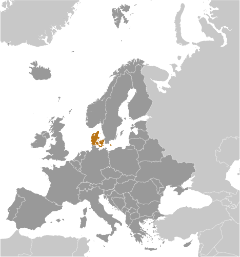
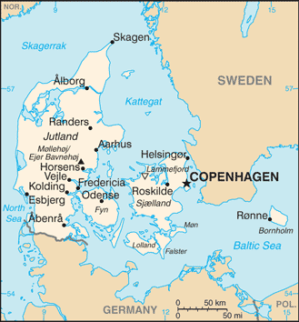
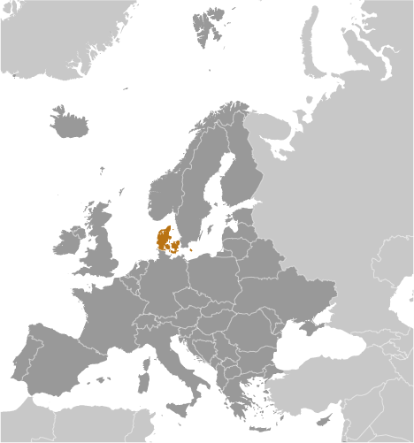
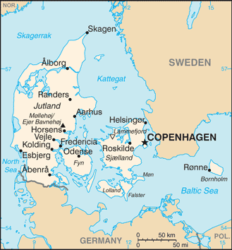

Europe :: DENMARK
Introduction :: DENMARK
-
Once the seat of Viking raiders and later a major north European power, Denmark has evolved into a modern, prosperous nation that is participating in the general political and economic integration of Europe. It joined NATO in 1949 and the EEC (now the EU) in 1973. However, the country has opted out of certain elements of the EU's Maastricht Treaty, including the European Economic and Monetary Union, European defense cooperation, and issues concerning certain justice and home affairs.
Geography :: DENMARK
-
Northern Europe, bordering the Baltic Sea and the North Sea, on a peninsula north of Germany (Jutland); also includes several major islands (Sjaelland, Fyn, and Bornholm)56 00 N, 10 00 EEuropetotal: 43,094 sq kmland: 42,434 sq kmwater: 660 sq kmnote: includes the island of Bornholm in the Baltic Sea and the rest of metropolitan Denmark (the Jutland Peninsula, and the major islands of Sjaelland and Fyn), but excludes the Faroe Islands and Greenlandcountry comparison to the world: 134slightly less than twice the size of Massachusettstotal: 140 kmborder countries (1): Germany 140 km7,314 kmterritorial sea: 12 nmcontiguous zone: 24 nmexclusive economic zone: 200 nmcontinental shelf: 200-m depth or to the depth of exploitationtemperate; humid and overcast; mild, windy winters and cool summerslow and flat to gently rolling plainsmean elevation: 34 melevation extremes: lowest point: Lammefjord -7 mhighest point: Mollehoj/Ejer Bavnehoj 171 mpetroleum, natural gas, fish, arable land, salt, limestone, chalk, stone, gravel and sandagricultural land: 63.4%arable land 58.9%; permanent crops 0.1%; permanent pasture 4.4%forest: 12.9%other: 23.7%note: highest percentage of arable land for any country in the world (2011 est.)4,350 sq km (2012)with excellent access to the North Sea, Skagerrak, Kattegat, and the Baltic Sea, population centers tend to be along coastal areas, particularly in Copenhagen and the eastern side of the country's mainlandflooding is a threat in some areas of the country (e.g., parts of Jutland, along the southern coast of the island of Lolland) that are protected from the sea by a system of dikesair pollution, principally from vehicle and power plant emissions; nitrogen and phosphorus pollution of the North Sea; drinking and surface water becoming polluted from animal wastes and pesticidesparty to: Air Pollution, Air Pollution-Nitrogen Oxides, Air Pollution-Persistent Organic Pollutants, Air Pollution-Sulfur 85, Air Pollution-Sulfur 94, Air Pollution-Volatile Organic Compounds, Antarctic Treaty, Biodiversity, Climate Change, Climate Change-Kyoto Protocol, Desertification, Endangered Species, Environmental Modification, Hazardous Wastes, Law of the Sea, Marine Dumping, Marine Life Conservation, Ozone Layer Protection, Ship Pollution, Tropical Timber 83, Tropical Timber 94, Wetlands, Whalingsigned, but not ratified: none of the selected agreementscontrols Danish Straits (Skagerrak and Kattegat) linking Baltic and North Seas; about one-quarter of the population lives in greater Copenhagen
People and Society :: DENMARK
-
5,605,948 (July 2017 est.)country comparison to the world: 116noun: Dane(s)adjective: DanishScandinavian, Inuit, Faroese, Turkish, Polish, Syrian, German, Iraqi (2017 est.)Danish, Faroese, Greenlandic (an Inuit dialect), German (small minority)note: English is the predominant second languageEvangelical Lutheran (official) 76%, Muslim 4%, other (denominations of less than 1% each, includes Roman Catholic, Jehovah's Witness, Serbian Orthodox Christian, Jewish, Baptist, and Buddhist) 20% (2017 est.)0-14 years: 16.41% (male 472,106/female 447,997)15-24 years: 13.08% (male 374,379/female 358,927)25-54 years: 38.76% (male 1,080,118/female 1,092,503)55-64 years: 12.52% (male 349,091/female 352,903)65 years and over: 19.23% (male 483,519/female 594,405) (2017 est.)total dependency ratio: 56youth dependency ratio: 26.3elderly dependency ratio: 29.7potential support ratio: 3.4 (2015 est.)total: 42.2 yearsmale: 41.2 yearsfemale: 43.2 years (2017 est.)country comparison to the world: 290.22% (2017 est.)country comparison to the world: 18710.5 births/1,000 population (2017 est.)country comparison to the world: 18610.3 deaths/1,000 population (2017 est.)country comparison to the world: 352.1 migrant(s)/1,000 population (2017 est.)country comparison to the world: 47with excellent access to the North Sea, Skagerrak, Kattegat, and the Baltic Sea, population centers tend to be along coastal areas, particularly in Copenhagen and the eastern side of the country's mainlandurban population: 88% of total population (2017)rate of urbanization: 0.58% annual rate of change (2015-20 est.)COPENHAGEN (capital) 1.268 million (2015)at birth: 1.06 male(s)/female0-14 years: 1.05 male(s)/female15-24 years: 1.04 male(s)/female25-54 years: 0.99 male(s)/female55-64 years: 0.99 male(s)/female65 years and over: 0.81 male(s)/femaletotal population: 0.97 male(s)/female (2016 est.)29.1 years (2015 est.)6 deaths/100,000 live births (2015 est.)country comparison to the world: 169total: 4 deaths/1,000 live birthsmale: 4.1 deaths/1,000 live birthsfemale: 3.9 deaths/1,000 live births (2017 est.)country comparison to the world: 191total population: 79.5 yearsmale: 77.1 yearsfemale: 82.1 years (2017 est.)country comparison to the world: 471.73 children born/woman (2017 est.)country comparison to the world: 16710.8% of GDP (2014)country comparison to the world: 163.65 physicians/1,000 population (2013)3.5 beds/1,000 population (2010)improved:urban: 100% of populationrural: 100% of populationtotal: 100% of populationunimproved:urban: 0% of populationrural: 0% of populationtotal: 0% of population (2015 est.)improved:urban: 99.6% of populationrural: 99.6% of populationtotal: 99.6% of populationunimproved:urban: 0.4% of populationrural: 0.4% of populationtotal: 0.4% of population (2015 est.)NANANA19.7% (2016)country comparison to the world: 1118.6% of GDP (2013)country comparison to the world: 8total: 19 yearsmale: 18 yearsfemale: 20 years (2014)total: 12%male: 13.1%female: 10.9% (2016 est.)country comparison to the world: 84
Government :: DENMARK
-
conventional long form: Kingdom of Denmarkconventional short form: Denmarklocal long form: Kongeriget Danmarklocal short form: Danmarketymology: the name derives from the words "Dane(s)" and "mark"; the latter referring to a march (borderland) or forestparliamentary constitutional monarchyname: Copenhagengeographic coordinates: 55 40 N, 12 35 Etime difference: UTC+1 (6 hours ahead of Washington, DC, during Standard Time)daylight saving time: +1hr, begins last Sunday in March; ends last Sunday in Octobernote: applies to continental Denmark only, not to its North Atlantic componentsmetropolitan Denmark - 5 regions (regioner, singular - region); Hovedstaden (Capital), Midtjylland (Central Jutland), Nordjylland (North Jutland), Sjaelland (Zealand), Syddanmark (Southern Denmark)note: an extensive local government reform merged 271 municipalities into 98 and 13 counties into five regions, effective 1 January 2007ca. 965 (unified and Christianized under HARALD I Gormson); 5 June 1849 (became a parliamentary constitutional monarchy)Constitution Day, 5 June (1849); note - closest equivalent to a national holidayhistory: several previous; latest adopted 5 June 1953amendments: proposed by the Folketing with consent of the government; passage requires approval by the next Folketing following a general election, approval by simple majority vote of at least 40% of voters in a referendum, and assent by the chief of state; changed several times, last in 2009 (Danish Act of Succession) (2016)civil law; judicial review of legislative actsaccepts compulsory ICJ jurisdiction with reservations; accepts ICCt jurisdictioncitizenship by birth: nocitizenship by descent only: at least one parent must be a citizen of Denmarkdual citizenship recognized: yesresidency requirement for naturalization: 7 years18 years of age; universalchief of state: Queen MARGRETHE II (since 14 January 1972); Heir Apparent Crown Prince FREDERIK, elder son of the monarch (born on 26 May 1968)head of government: Prime Minister Lars LOKKE RASMUSSEN (since 28 June 2015)cabinet: Council of State appointed by the monarchelections/appointments: the monarchy is hereditary; following legislative elections, the leader of the majority party or majority coalition usually appointed prime minister by the monarchdescription: unicameral People's Assembly or Folketing (179 seats, including 2 representing Greenland and 2 representing the Faroe Islands; members directly elected in multi-seat constituencies by proportional representation vote; members serve 4-year terms unless the Folketing is dissolved earlier)elections: last held on 18 June 2015 (next to be held by June 2019)election results: percent of vote by party - SDP 26.3%, DF 21.1%, V 19.5%, EL 7.8%, LA 7.5%, AP 4.8%, SLP 4.6%, SF 4.2%, C 3.4%, other 0.9%; seats by party - SDP 47, DF 37, V 34, EL 14, LA 13, AP 9, SLP 8, SF 7, C 6; note - does not include each of the 2 seats from Greenland and the Faroe Islandshighest court(s): Supreme Court (consists of the court president and 18 judges)judge selection and term of office: judges appointed by the monarch upon the recommendation of the Minister of Justice with the advice of the Judicial Appointments Council, a 6-member independent body of judges and lawyers; judges appointed for life with retirement at age 70subordinate courts: Special Court of Indictment and Revision; 2 High Courts; Maritime and Commercial Court; county courtsThe Alternative A or AP [Uffe ELBAEK]Conservative People's Party or DKF or C [Soren PAPE POULSEN]Danish People's Party or DF or O [Kristian THULESEN DAHL]Liberal Alliance or LA [Anders SAMUELSEN]Liberal Party (Venstre) or V [Lars LOKKE RA/SMUSSEN]Red-Green Alliance (Unity List) or EL [collective leadership, spokesperson Pernille SKIPPER]Social Democrats or A [Mette FREDERIKSEN]Social Liberal Party or B [Morten OSTERGAARD]Socialist People's Party or SF [Pia OLSEN DYHR]Confederation of Danish Employers or DA [Jacob HOLBRAAD]Confederation of Danish Industries or DI [Karsten DYBVAD]Confederation of Danish Labor Unions or LO [Lizette RISGAARD]DaneAge Association [Bjarne HASTRUP]Danish Shipowners' Association [Anne STEFFENSEN]Danish Bankers Association [Ulrik NODGAARD]Danish Society for Nature Conservation or DN [Ella Maria BISSCHOP-LARSEN]other: environmental groups; humanitarian relief; development assistance; human rights NGOsADB (nonregional member), AfDB (nonregional member), Arctic Council, Australia Group, BIS, CBSS, CD, CE, CERN, EAPC, EBRD, ECB, EIB, EITI (implementing country), ESA, EU, FAO, FATF, G-9, IADB, IAEA, IBRD, ICAO, ICC (national committees), ICCt, ICRM, IDA, IEA, IFAD, IFC, IFRCS, IGAD (partners), IHO, ILO, IMF, IMO, IMSO, Interpol, IOC, IOM, IPU, ISO, ITSO, ITU, ITUC (NGOs), MIGA, MINUSMA, NATO, NC, NEA, NIB, NSG, OAS (observer), OECD, OPCW, OSCE, Paris Club, PCA, Schengen Convention, UN, UNCTAD, UNESCO, UNHCR, UNIDO, UNMIL, UNMISS, UNRWA, UNTSO, UPU, WCO, WHO, WIPO, WMO, WTO, ZCchief of mission: Ambassador Lars Gert LOSE (since 17 September 2015)chancery: 3200 Whitehaven Street NW, Washington, DC 20008telephone: [1] (202) 234-4300FAX: [1] (202) 328-1470consulate(s) general: Chicago, New Yorkchief of mission: Ambassador (vacant); Charge d'Affaires Laura LOCHMAN (since 2 January 2017)embassy: Dag Hammarskjolds Alle 24, 2100 Copenhagen 0mailing address: Unit 5280, DPO, AE 09716telephone: [45] 33 41 71 00FAX: [45] 35 43 02 23red with a white cross that extends to the edges of the flag; the vertical part of the cross is shifted to the hoist side; the banner is referred to as the Dannebrog (Danish flag) and is one of the oldest national flags in the world; traditions as to the origin of the flag design vary, but the best known is a legend that the banner fell from the sky during an early-13th century battle; caught up by the Danish king before it ever touched the earth, this heavenly talisman inspired the royal army to victory; in actuality, the flag may derive from a crusade banner or ensignnote: the shifted cross design element was subsequently adopted by the other Nordic countries of Finland, Iceland, Norway, and Swedenlion, mute swan; national colors: red, whitename: "Der er et yndigt land" (There is a Lovely Land); "Kong Christian" (King Christian)lyrics/music: Adam Gottlob OEHLENSCHLAGER/Hans Ernst KROYER; Johannes EWALD/unknownnote: Denmark has two national anthems with equal status; "Der er et yndigt land," adopted 1844, is a national anthem, while "Kong Christian," adopted 1780, serves as both a national and royal anthem; "Kong Christian" is also known as "Kong Christian stod ved hojen mast" (King Christian Stood by the Lofty Mast) and "Kongesangen" (The King's Anthem); within Denmark, the royal anthem is played only when royalty is present and is usually followed by the national anthem; when royalty is not present, only the national anthem is performed; outside Denmark, the royal anthem is played, unless the national anthem is requested
Economy :: DENMARK
-
This thoroughly modern market economy features a high-tech agricultural sector, advanced industry with world-leading firms in pharmaceuticals, maritime shipping, and in renewable energy, and a high dependence on foreign trade. Denmark is a net exporter of food, oil, and gas and enjoys a comfortable balance of payments surplus, but depends on imports of raw materials for the manufacturing sector. Danes enjoy a high standard of living, and the Danish economy is characterized by extensive government welfare measures and an equitable distribution of income. An aging population will be a long-term issue.Denmark is a member of the EU; Danish legislation and regulations conform to EU standards on almost all issues. Despite previously meeting the criteria to join the European Economic and Monetary Union, Denmark has negotiated an opt-out with the EU and is not required to adopt the euro. Within the EU, Denmark is among the strongest supporters of trade liberalization.Denmark is experiencing a modest economic expansion. The economy grew by 1.6% in 2015 and an estimated 1.3% in 2016. The expansion is expected to continue at similar rates in 2017 and 2018. The labor market has strengthened since 2013, and unemployment stood at 4.2% in early 2017, based on the national measure. By early 2017, some sectors were experiencing difficulties attracting qualified labor. Productivity growth was significantly below the OECD average from the mid-1990s until 2011, but has increased in recent years. Improvement in productivity is needed to ensure continued growth.Denmark maintained a healthy budget surplus for many years up to 2008, but the global financial crisis swung the budget balance into deficit. The 2016 deficit was 1.4%. The government projects lower deficits in 2017 and 2018, and public debt (EMU debt) as a share of GDP is expected to decline. In 2015, household indebtedness remained relatively high at more than 292% of net disposable income, while household net worth - from private pension schemes and other assets - amounted to 497% of net disposable income.$275.3 billion (2016 est.)$267.3 billion (2015 est.)$260.3 billion (2014 est.)note: data are in 2016 dollarscountry comparison to the world: 60$306.7 billion (2016 est.)1.7% (2016 est.)1.6% (2015 est.)1.7% (2014 est.)country comparison to the world: 169$48,200 (2016 est.)$47,800 (2015 est.)$47,400 (2014 est.)note: data are in 2016 dollarscountry comparison to the world: 3328.2% of GDP (2016 est.)28.9% of GDP (2015 est.)28.9% of GDP (2014 est.)country comparison to the world: 37household consumption: 47.5%government consumption: 25.4%investment in fixed capital: 20.1%investment in inventories: 0.1%exports of goods and services: 53.4%imports of goods and services: -46.6% (2016 est.)agriculture: 1.1%industry: 23.6%services: 75.3% (2016 est.)barley, wheat, potatoes, sugar beets; pork, dairy products; fishiron, steel, nonferrous metals, chemicals, food processing, machinery and transportation equipment, textiles and clothing, electronics, construction, furniture and other wood products, shipbuilding and refurbishment, windmills, pharmaceuticals, medical equipment3.7% (2016 est.)country comparison to the world: 642.953 million (2016 est.)country comparison to the world: 104agriculture: 2.4%industry: 18.3%services: 79.3% (2016 est.)6.2% (2016 est.)4.6% (2015 est.)country comparison to the world: 5513.4% (2011 est.)lowest 10%: 1.9%highest 10%: 28.7% (2007)28.8 (2015 est.)25.7 (2005 est.)country comparison to the world: 132revenues: $162.3 billionexpenditures: $164.3 billion (2016 est.)52.9% of GDP (2016 est.)country comparison to the world: 13-0.6% of GDP (2016 est.)country comparison to the world: 5837.7% of GDP (2016 est.)39.5% of GDP (2015 est.)note: data cover general government debt, and includes debt instruments issued (or owned) by government entities other than the treasury; the data include treasury debt held by foreign entities; the data include debt issued by subnational entities, as well as intra-governmental debt; intra-governmental debt consists of treasury borrowings from surpluses in the social funds, such as for retirement, medical care, and unemployment; debt instruments for the social funds are not sold at public auctionscountry comparison to the world: 140calendar year0.3% (2016 est.)0.5% (2015 est.)country comparison to the world: 540.05% (2016)0.05% (2015)country comparison to the world: 1473.25% (31 December 2016 est.)3.42% (31 December 2015 est.)country comparison to the world: 166$159.3 billion (31 December 2016 est.)$151.9 billion (31 December 2015 est.)country comparison to the world: 27$173.4 billion (31 December 2016 est.)$168.4 billion (31 December 2015 est.)country comparison to the world: 42$637.3 billion (31 December 2016 est.)$632.9 billion (31 December 2015 est.)country comparison to the world: 22$224.9 billion (31 December 2012 est.)$179.5 billion (31 December 2011 est.)$231.7 billion (31 December 2010 est.)country comparison to the world: 32$24.09 billion (2016 est.)$27.58 billion (2015 est.)country comparison to the world: 13$103.6 billion (2016 est.)$102.6 billion (2015 est.)country comparison to the world: 35machinery and instruments, meat and meat products, dairy products, fish, pharmaceuticals, furniture and design, windmillsGermany 16.3%, Sweden 11.9%, US 8.2%, UK 6.5%, Norway 6.1%, Netherlands 5.1%, China 4.4% (2016)$86.39 billion (2016 est.)$87.55 billion (2015 est.)country comparison to the world: 35machinery and equipment, raw materials and semimanufactures for industry, chemicals, grain and foodstuffs, consumer goodsGermany 21.4%, Sweden 12.2%, Netherlands 8%, China 7.3%, Norway 5.5%, UK 4.2% (2016)$64.25 billion (31 December 2016 est.)$65.19 billion (31 December 2015 est.)country comparison to the world: 32$484.8 billion (31 March 2016 est.)$519.8 billion (31 March 2015 est.)country comparison to the world: 25$147.9 billion (31 December 2016 est.)$145.8 billion (31 December 2015 est.)country comparison to the world: 34$235.4 billion (31 December 2016 est.)$230.3 billion (31 December 2015 est.)country comparison to the world: 24Danish kroner (DKK) per US dollar -6.7309 (2016 est.)6.7309 (2015 est.)6.7236 (2014 est.)5.6125 (2013 est.)5.79 (2012 est.)
Energy :: DENMARK
-
electrification - total population: 100% (2016)27.34 billion kWh (2015 est.)country comparison to the world: 6831.41 billion kWh (2015 est.)country comparison to the world: 629.919 billion kWh (2016 est.)country comparison to the world: 2314.98 billion kWh (2016 est.)country comparison to the world: 1414.01 million kW (2015 est.)country comparison to the world: 5248.1% of total installed capacity (2015 est.)country comparison to the world: 1540% of total installed capacity (2015 est.)country comparison to the world: 770% of total installed capacity (2015 est.)country comparison to the world: 17253.6% of total installed capacity (2015 est.)country comparison to the world: 2140,600 bbl/day (2016 est.)country comparison to the world: 4078,370 bbl/day (2016 est.)country comparison to the world: 3877,950 bbl/day (2016 est.)country comparison to the world: 48490.6 million bbl (1 January 2017 es)country comparison to the world: 49187,700 bbl/day (2016 est.)country comparison to the world: 53158,200 bbl/day (2016 est.)country comparison to the world: 65171,600 bbl/day (2016 est.)country comparison to the world: 35165,400 bbl/day (2016 est.)country comparison to the world: 404.618 billion cu m (2015 est.)country comparison to the world: 524.392 billion cu m (2015 est.)country comparison to the world: 702.192 billion cu m (2015 est.)country comparison to the world: 37658 million cu m (2015 est.)country comparison to the world: 6516.88 billion cu m (1 January 2017 es)country comparison to the world: 7842 million Mt (2013 est.)country comparison to the world: 67
Communications :: DENMARK
-
total subscriptions: 1,557,101subscriptions per 100 inhabitants: 28 (July 2016 est.)country comparison to the world: 61total: 6,985,035subscriptions per 100 inhabitants: 125 (July 2016 est.)country comparison to the world: 106general assessment: excellent telephone and Internet servicesdomestic: buried and submarine cables and microwave radio relay form trunk network; multiple mobile-cellular communications systemsinternational: country code - 45; a series of fiber-optic submarine cables link Denmark with Canada, Faroe Islands, Germany, Iceland, Netherlands, Norway, Poland, Russia, Sweden, and UK; satellite earth stations - 18 (6 Intelsat, 10 Eutelsat, 1 Orion, 1 Inmarsat (Blaavand-Atlantic-East)); note - the Nordic countries (Denmark, Finland, Iceland, Norway, and Sweden) share the Danish earth station and the Eik, Norway, station for worldwide Inmarsat access (2015)strong public-sector TV presence with state-owned Danmarks Radio (DR) operating 6 channels and publicly owned TV2 operating roughly a half-dozen channels; broadcasts of privately owned stations are available via satellite and cable feed; DR operates 4 nationwide FM radio stations, 10 digital audio broadcasting stations, and 14 web-based radio stations; in 2010, there were 140 commercial and 187 community (non-commercial) radio stations (2012).dktotal: 5,424,169percent of population: 97.0% (July 2016 est.)country comparison to the world: 62
Transportation :: DENMARK
-
number of registered air carriers: 10inventory of registered aircraft operated by air carriers: 76annual passenger traffic on registered air carriers: 582,011annual freight traffic on registered air carriers: 0 mt-km (2015)OY (2016)80 (2013)country comparison to the world: 68total: 28over 3,047 m: 22,438 to 3,047 m: 71,524 to 2,437 m: 5914 to 1,523 m: 12under 914 m: 2 (2017)total: 52914 to 1,523 m: 5under 914 m: 47 (2013)gas 1,536 km; oil 330 km (2015)total: 3,476 kmstandard gauge: 3,476 km 1.435-m gauge (1,756 km electrified) (2017)country comparison to the world: 62total: 74,558 kmpaved: 74,558 km (includes 1,205 km of expressways) (2017)country comparison to the world: 64400 km (2010)country comparison to the world: 87total: 666by type: towing- and supply ships 193, container 118, product tanker 91, passenger 80, chemical tanker 64, guard ships 40, other dry bulk 33, roll on/roll off 20, liquefied gas 11, bulk carrier 7, oil tanker 5, cable ships 4 (2016)foreign-owned: 27 (Germany 9, Greenland 1, Norway 2, Sweden 15)registered in other countries: 582 (Antigua and Barbuda 20, Bahamas 69, Belgium 4, Brazil 3, Curacao 1, Cyprus 6, Egypt 1, France 11, Gibraltar 7, Hong Kong 42, Isle of Man 30, Italy 4, Jamaica 1, Liberia 8, Lithuania 8, Luxembourg 1, Malaysia 1, Malta 34, Marshall Islands 7, Moldova 1, Netherlands 27, Norway 7, Panama 41, Philippines 2, Portugal 4, Saint Vincent and the Grenadines 9, Singapore 149, Sweden 4, UK 43, Uruguay 1, US 31, Venezuela 1, unknown 4) (2010)country comparison to the world: 18major seaport(s): Baltic Sea - Aarhus, Copenhagen, Fredericia, Kalundborg; North Sea - Esbjerg,river port(s): Aalborg (Langerak)dry bulk cargo port(s): Ensted (coal)cruise port(s): Copenhagen
Military and Security :: DENMARK
-
1.15% of GDP (2016)1.12% of GDP (2015)1.15% of GDP (2014)1.23% of GDP (2013)1.35% of GDP (2012)country comparison to the world: 71Danish Army, Royal Danish Navy, Royal Danish Air Force (2017)18 years of age for compulsory and voluntary military service; conscripts serve an initial training period that varies from 4 to 12 months according to specialization; former conscripts are assigned to mobilization units; women eligible to volunteer for military service; in addition to full time employment, the Danish Military offers reserve contracts in all three branches (2016)
Transnational Issues :: DENMARK
-
Iceland, the UK, and Ireland dispute Denmark's claim that the Faroe Islands' continental shelf extends beyond 200 nm; sovereignty dispute with Canada over Hans Island in the Kennedy Channel between Ellesmere Island and Greenland; Denmark (Greenland) and Norway have made submissions to the Commission on the Limits of the Continental Shelf (CLCS) and Russia is collecting additional data to augment its 2001 CLCS submissionrefugees (country of origin): 18,215 (Syria) (2016)stateless persons: 7,610 (2016)